Architecture 11 - Galaxy Markdown Architecture
Contributors
Questions
What is Galaxy Markdown and how does it differ from regular HTML?
How do contextual references get resolved to internal IDs?
What is the transformation pipeline for Galaxy Markdown?
How do frontend components render Galaxy directives?
Objectives
Understand the contextual addressing system for Galaxy Markdown
Learn the backend parsing and transformation pipeline
Understand the handler pattern for export/rendering
Know how frontend components process Galaxy directives
Learn the editor architecture for pages and reports
layout: introduction_slides topic_name: Galaxy Architecture
Architecture 11 - Galaxy Markdown Architecture
Portable, reproducible documentation with embedded Galaxy objects..
layout: true left-aligned class: left, middle — layout: true class: center, middle
class: enlarge150
What is Galaxy Markdown?
- Portable, reproducible documentation with embedded Galaxy objects
- Alternative to HTML (instance-locked)
- Powers: workflow reports, pages, tool outputs
class: center
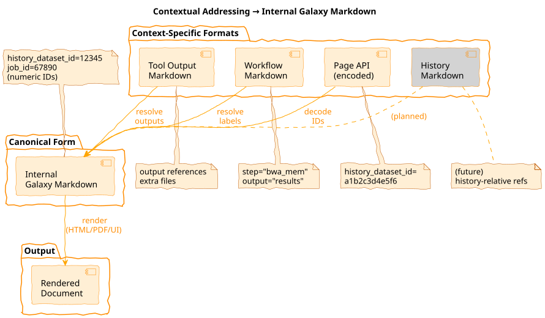
class: enlarge150
Three Document Types
| Type | Editable | Scope | Use Case |
|---|---|---|---|
| Reports | No | Invocation | Workflow output docs |
| Pages | Yes | Any | User documentation |
| Tool Output | No | Job | Tool-generated reports |
class: center
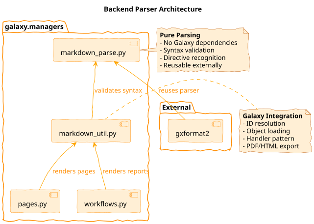
lib/galaxy/managers/markdown_parse.py
class: reduce90
Directive Syntax
Block directive:
```galaxy
history_dataset_as_table(history_dataset_id=12345, title="Results")
```
Inline directive:
Text with ${galaxy history_dataset_name(output="results")} embedded.
lib/galaxy/managers/markdown_parse.py:GALAXY_MARKDOWN_FUNCTION_CALL_LINE
class: enlarge120
27 Directives
- Dataset:
display,as_image,as_table,peek,info,link,name,type - Workflow:
display,image,license,invocation_inputs/outputs - Job:
parameters,metrics,tool_stdout/stderr - Meta:
generate_time,generate_galaxy_version,invocation_time - Instance: 6
instance_*_linkvariants
class: reduce90
Validation
def validate_galaxy_markdown(galaxy_markdown, internal=True):
# Line-by-line fence tracking state machine
for line, fenced, open_fence, line_no in _split_markdown_lines(markdown):
if fenced and GALAXY_FUNC_CALL.match(line):
_check_func_call(match, line_no) # Validates args
# Raises ValueError with line number on failure
lib/galaxy/managers/markdown_parse.py:validate_galaxy_markdown()
class: center
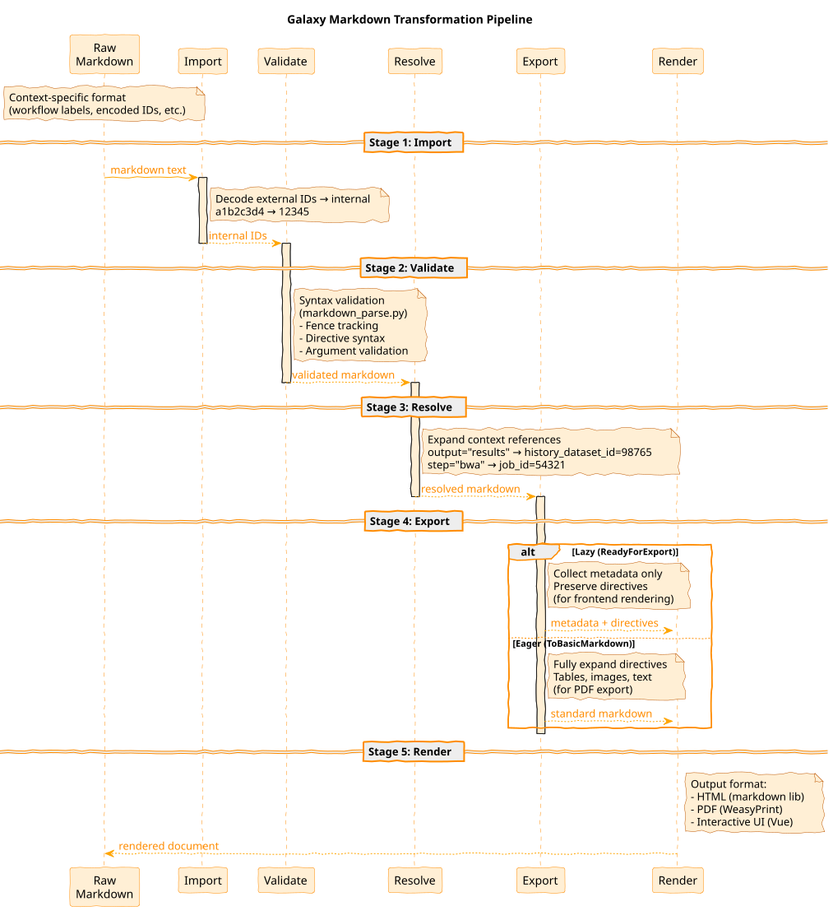
class: center
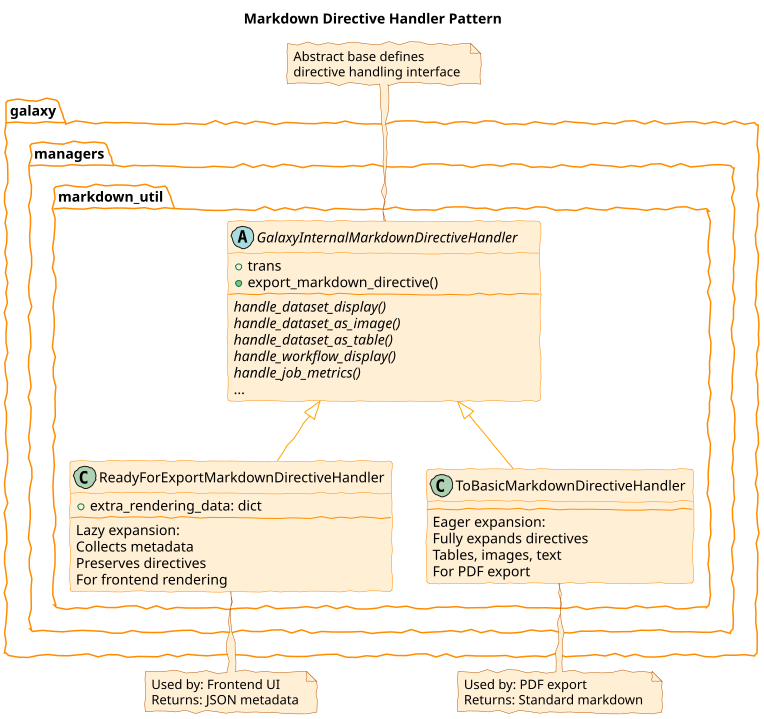
lib/galaxy/managers/markdown_util.py
class: reduce90
ID Encoding
# Storage (internal): numeric IDs
history_dataset_display(history_dataset_id=12345)
# Export (external): encoded IDs for URLs
history_dataset_display(history_dataset_id=a1b2c3d4e5f6)
# Regex patterns for conversion
UNENCODED_ID_PATTERN = r"(history_dataset_id)=([\\d]+)"
ENCODED_ID_PATTERN = r"(history_dataset_id)=([a-z0-9]+)"
class: reduce90
Invocation Resolution
# Input: workflow-relative references
invocation_outputs(output="alignment_results")
job_metrics(step="bwa_mem")
# Output: instance-specific IDs
history_dataset_display(history_dataset_id=98765)
job_metrics(job_id=54321)
lib/galaxy/managers/markdown_util.py:resolve_invocation_markdown()
class: center
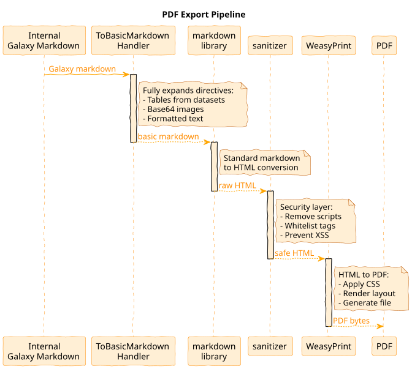
lib/galaxy/managers/markdown_util.py:internal_galaxy_markdown_to_pdf()
class: center
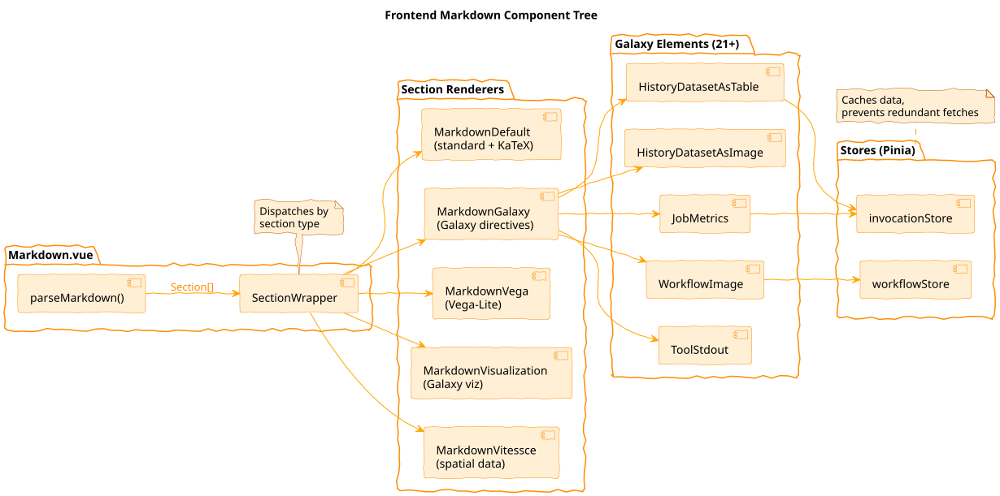
client/src/components/Markdown/Markdown.vue
class: reduce90
Section Parsing
// Triple-backtick splits content into typed sections
parseMarkdown(content) → [
{ type: 'markdown', content: '# Title...' },
{ type: 'galaxy', content: 'history_dataset_as_table(...)' },
{ type: 'vega', content: '{"$schema": "..."}' }
]
client/src/components/Markdown/parse.ts
class: center
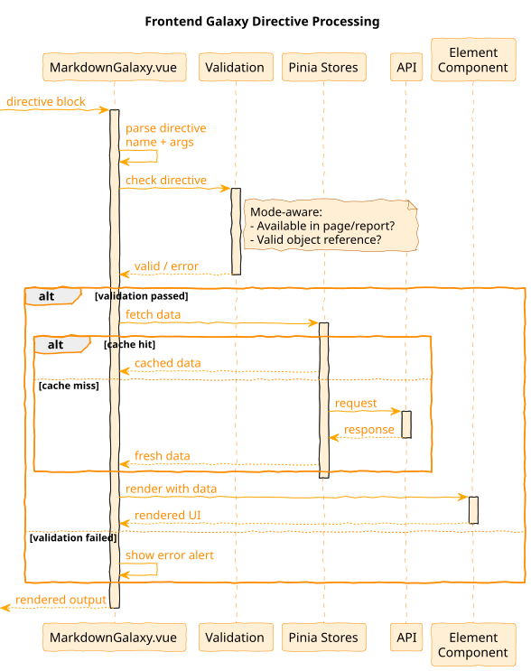
client/src/components/Markdown/Sections/MarkdownGalaxy.vue
class: enlarge120
Element Components
21+ specialized renderers:
HistoryDatasetAsTable,HistoryDatasetAsImageWorkflowImage,WorkflowDisplayJobMetrics,JobParametersToolStdout,ToolStderr
Each handles data fetching + rendering.
client/src/components/Markdown/Sections/Elements/
class: center
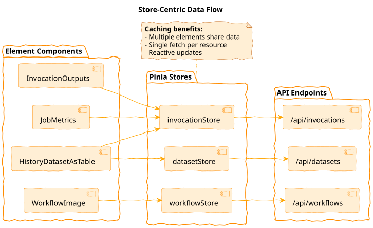
class: center
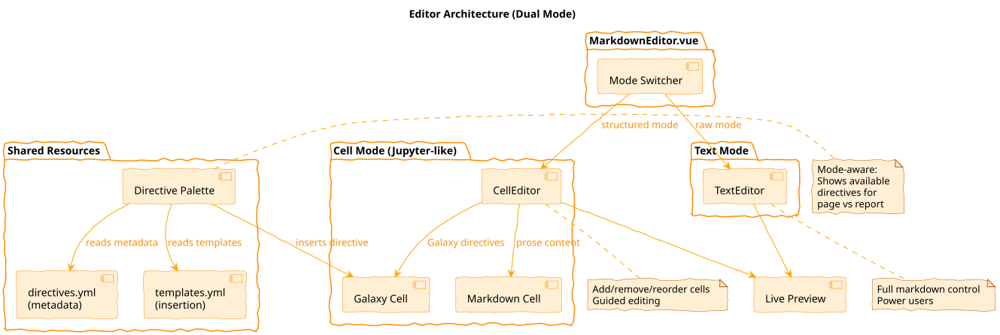
client/src/components/Markdown/MarkdownEditor.vue
class: reduce90
Directive Registry
# directives.yml - metadata for editor UI
history_dataset_as_table:
side_panel_name:
page: "Dataset Table"
report: "Output Table"
help: "Embed dataset as formatted table..."
# templates.yml - insertion templates
history_dataset_as_table:
template: 'history_dataset_as_table(history_dataset_id="%ID%")'
client/src/components/Markdown/directives.yml
class: enlarge150
Mode-Aware Design
- Page mode: Reference any workflow/dataset in instance
- Report mode: Reference “this” invocation (step labels)
- Same directives, different presentation and validation
class: center
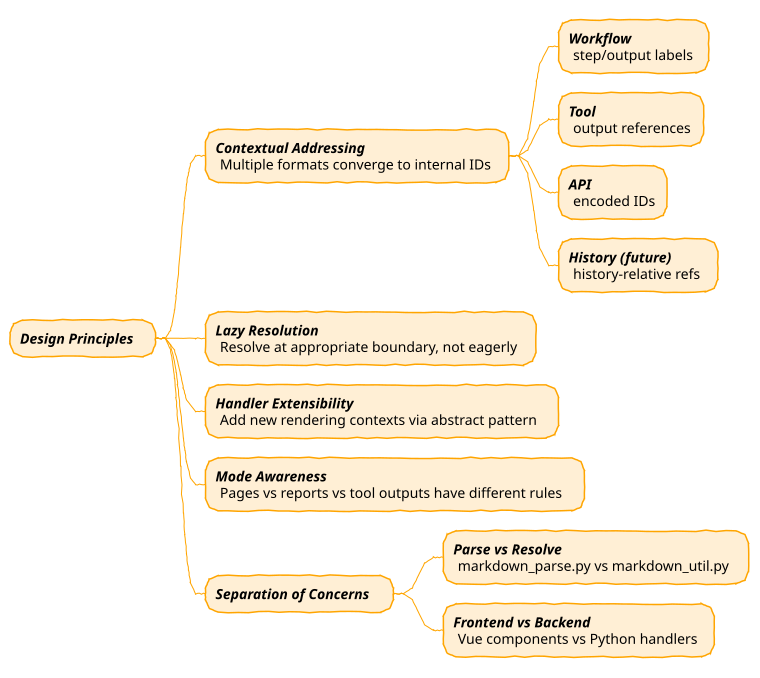
class: reduce90
Adding a Directive
# 1. markdown_parse.py - add to ALLOWED_ARGUMENTS
ALLOWED_ARGUMENTS["new_directive"] = frozenset(["arg1", "arg2"])
# 2. markdown_util.py - add handler method
def handle_new_directive(self, ...):
...
# 3. Frontend - add element component
# client/src/components/Markdown/Sections/Elements/NewDirective.vue
# 4. directives.yml - add metadata
class: center
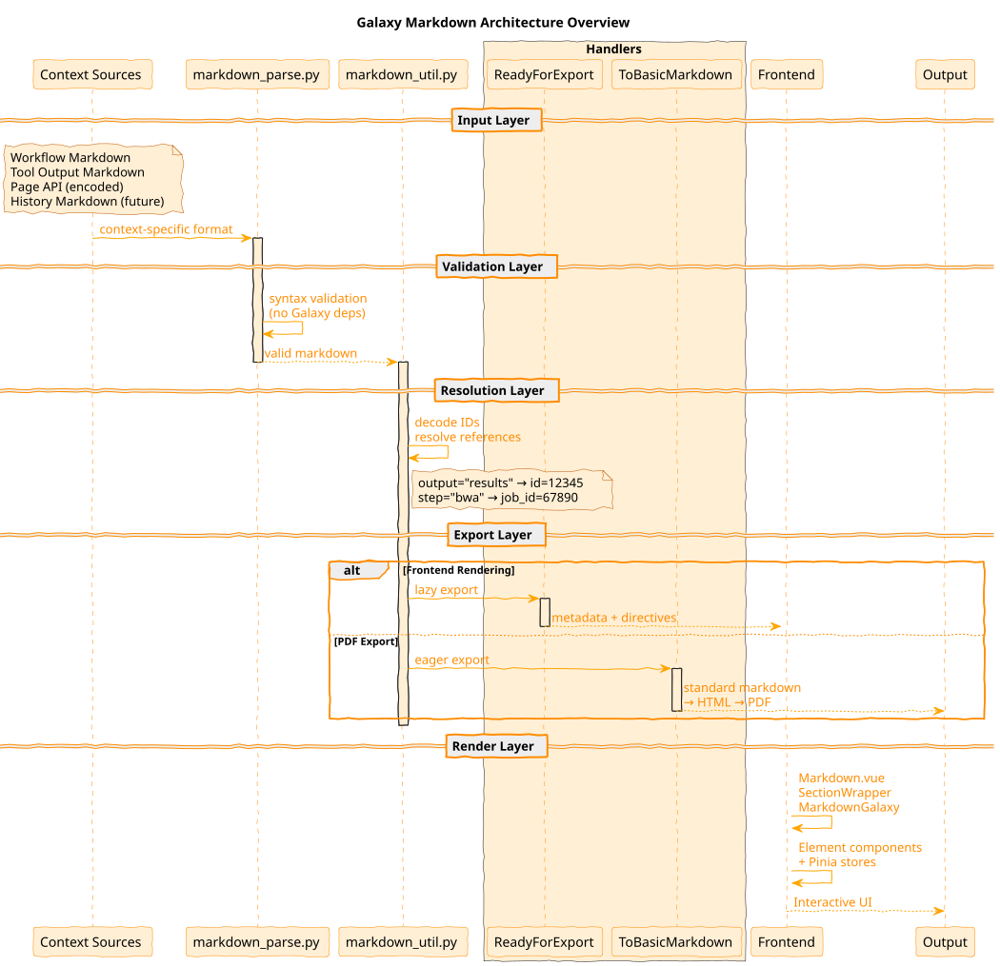
class: enlarge200
Key Takeaways
- Portable: Context-specific refs → internal IDs at boundaries
- Extensible: Handler pattern, directive registry, new contexts
- Multi-format: Same internal form → HTML, PDF, interactive UI
- 27+ directives for embedding Galaxy objects
| .footnote[Previous: Galaxy File Sources Architecture | Next: Galaxy Client Architecture] |
Key Points
- Galaxy Markdown enables portable documentation via contextual addressing
- Multiple context-specific formats converge to internal IDs at boundaries
- Handler pattern enables lazy (frontend) vs eager (PDF) export
- 27+ directives for embedding Galaxy objects
- Frontend uses store-centric data flow for caching
Thank you!
This material is the result of a collaborative work. Thanks to the Galaxy Training Network and all the contributors! Tutorial Content is licensed under
Creative Commons Attribution 4.0 International License.
Tutorial Content is licensed under
Creative Commons Attribution 4.0 International License.